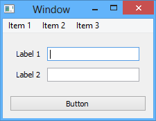
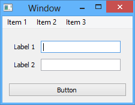

Introduction¶
This article is geared towards introducing a brand new user to Enaml. The article sections cover the background, motivations, and programming paradigm for the framework.
See also
- For an intro to the Enaml language structure, see the Anatomy of Enaml.
- For advanced articles on the Enaml language and framework, see the Developer Guides.
What is Enaml?¶
Fundamentally
Enaml is a declarative extension to the Python language grammar which enables a developer to concisely define a hierarchical tree of objects which automatically react to changes in a data model.
Practically
Enaml is one of the easiest and most powerful ways to build professional quality user interfaces with Python.
Traditional UIs¶
Traditional user interface frameworks are typically implemented in a low level language like C or C++. This is because the frameworks utilize the libraries and services provided by the underlying operating system in order to draw pixels on the screen. These low-level drawing operations are abstracted from the developer with high level easy-to-use APIs. Some UI frameworks can be used from Python with the help of wrappers which expose the high level toolkit APIs to the Python runtime. The most common of these frameworks and their Python wrappers include:
All of these frameworks share a common theme which is:
A user interface is constructed as a tree of graphical objects with some associated state.
Consider a hypothetical abstract object hierarchy, and what it might look like if converted into a typical UI window:
 

In order to create such a window, most frameworks require the developer to write imperative code to setup up the window’s object hierachy. This leads to code which looks similar to the following Python snippet:
window = Window()
menu = Menu(window)
item_1 = MenuItem(menu, "Item 1")
item_2 = MenuItem(menu, "Item 2")
item_3 = MenuItem(menu, "Item 3")
window.setMenu(menu)
label_1 = Label(window, "Label 1")
field_1 = Field(window)
label_2 = Label(window, "Label 2")
field_2 = Field(window)
form = FormLayout()
form.addRow(label_1, field_1)
form.addRow(label_2, field_2)
button = Button(window, "Button")
vbox = VBoxLayout()
vbox.addLayout(form)
vbox.addWidget(button)
window.setLayout(vbox)
The problem with code like this is that its structure does not map well to the objects which it is producing. The code is tedious to read, write, and understand; which makes it error-prone and difficult to maintain.
Imperative programming constructs are simply not well suited for defining nested object hierarchies.
Programming against these frameworks is a fairly low level task and procedural task. A developer is responsible for:
- procedurally building the object hierarchy
- tracking the data model for changes
- manually updating the UI to reflect data model changes
Note
There are design patterns (such as MVC) which exist to make this process more manageable, but they require strict developer discipline and do little to reduce the tedium of the typical UI development process.
Declarative UIs¶
Relatively recently, there has been a shift in the UI development paradigm which places an emphasis on the declarative specification of the object hierarchy. The developer provides a declarative representation of the UI and defines how the visual elements of the UI should bind to data in data models; the framework then takes responsibity for updating the UI when the data in the data models change, and vice versa.
This paradigm solves the primary problems with the imperative model:
- The structure of the code typically mimics the structure of the UI.
- The developer is freed from the tedium of managing state changes between models and views.
Microsoft’s WPF and Qt’s QML are two great examples of production implementations of this programming model. Though these two frameworks are similar in approach, they expose the declarative interface to the developer using different Domain Specific Languages (DSL):
| Microsofts’s WPF | Qt’s QML |
|---|---|
| XML-based declarative DSL | Javascript-based declarative DSL |
| Data models written in .Net | Data models written in C++ or JS |
| UI binds to model properties | UI binds to signals and properties |
| Markup is translated to .Net | Markup is interpreted by a VM |
While both of these frameworks are popular and robust, neither are very friendly for developing in a Python-centric ecosystem. The lack of a robust declarative UI framework for Python is the motivating force behind Enaml.
Enaml brings the declarative UI paradigm to Python in a seamlessly integrated fashion. The grammar of the Enaml language is a strict superset of Python. This means that any valid Python file is also a valid Enaml file, though the converse is not necessary true. The tight integration with Python means that the developer feels at home and uses standard Python syntax when expressing how their data models bind to the visual attributes of the UI.
As a testament to just how natural it is to define a UI in the Enaml language, the following snippet of code is the entire definition for the screenshot of the window above. Even before any introduction to the language, it is clear that the structure of the UI is reflected directly in the structure of the code. This makes the code easier to read, write, and maintain; which in turn slashes development time and leads to more robust applications.
enamldef Main(MainWindow):
title = 'Window'
MenuBar:
Menu:
title = 'Item 1'
Menu:
title = 'Item 2'
Menu:
title = 'Item 3'
Container:
Form:
Label:
text = 'Label 1'
Field:
pass
Label:
text = 'Label 2'
Field:
pass
PushButton:
text = 'Button'
Enaml Advantages¶
The advantages that Enaml provides to a Python application developer over the typical UI frameworks are numerous. The most salient of these are focused on helping the developer write robust and flexible code.
Ease of Prototyping
- The developer can easily visualize what an Enaml UI will look like.
- The data models do not need to be bound to the UI in advance.
The Enaml syntax is specifically designed to make it easy for a developer to quickly glance at a UI specification and build a mental model of how that UI will visually appear on the screen. Furthermore, Enaml does not require data models to be bound to the UI in advance. This feature allows a developer to prototype the visual aspects of the UI in isolation. Enaml prototypes can be developed quickly enough that the need for mockup tools is almost eliminated.
Strict Model-View Separation
- The MVC pattern can be confusing to follow in certain UI frameworks. In Enaml, the pattern in baked into the language.
- Enaml’s data binding operators largely eliminate the need for an explicit controller class.
The Model-View-Controller (MVC) pattern is a well established standard pattern for structuring user interface applications. Unfortunately, it is not always well followed and the procedural interfaces of many UI toolkits can make it difficult to identify the conceptual boundaries of the various components. The Enaml language is structured to enforce strict Model-View separation. The data binding operators in Enaml largely eliminate the need for a controller class, although they do not prevent the use of one for advanced use cases. When a developer encounters a situation which is difficult to express in Enaml, it usually indicates that the data models are not correctly factored. Think of this as a built-in sanity check.
UI Toolkit Agnostic
- Enaml is capable of using almost any UI toolkit as a rendering backend.
- Developers code against the declarative Enaml interfaces, and do not need to worry about how those get translated into procedural toolkit calls.
Enaml is UI toolkit agnostic. That is, Enaml is capable of using nearly any UI toolkit as a rendering backend. This is advantageous because it allows the developer to code against the declarative Enaml interfaces and not care about how the interfaces are translated to the procedural toolkit calls. This level of indirection allows the Enaml interfaces to be consistent and extract the maximum performance from the underlying rendering engine. It also allows an Enaml application to be run transparently across any of the available backends without requiring any changes to the application code.